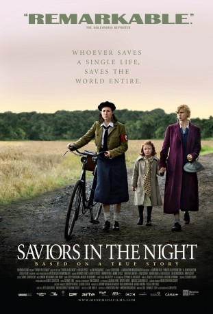

#8596 Unter Bauern - Retter in der Nacht
Alternativ: Unter Bauern
 
 IMDB-Wertung: 6.3 / 10
IMDB-Wertung: 6.3 / 10  Metascore: 0
Metascore: 0 
Based on the memories of Marga Spiegel. In her narrative, published in 1965, she describes how courageous farmers in southern Munsterland hid her, her husband Siegfried and their little daughter Karin from 1943 until 1945, thus saving them from deportation to the extermination camps in the East.. Without reservation, the farmers offer the refugees their protection. That this turns them into heroes would never occur to them. They are used to weathering even dangerous situations somehow, guided only by their instinct and century-old code of ethics. They risk their own lives, and, if necessary, even that of their families. There is never a discussion about friendship, reliability, humanity.
Jahr: 2009
Dauer: 96 Minuten
FSK: 12
Land: Deutschland Studio: 3L FilmverleihTonspuren:
Untertitel:
Auflösung: 1080p (1920x1040) Größe: 9512 MB
Genre: Drama, Geschichte
Regisseur: Ludi Boeken
Drehbuch: Steve Armour
Soundtrack: David Greilsammer
Darsteller:
 Veronica Ferres als Marga Spiegel
Veronica Ferres als Marga Spiegel Armin Rohde als Menne Spiegel
Armin Rohde als Menne Spiegel- Marlon Kittel als Klemens Aschoff
- Nicole Unger als Josefa Schwester
- Smadi Wolfman als Frau Albermann
 Karl Makinen als GI John
Karl Makinen als GI John- Lia Hoensbroech als Anni Aschoff
- Martin Horn als Hermann Aschoff
 Margarita Broich als Frau Aschoff
Margarita Broich als Frau Aschoff- Luisa Mix als Karin Spiegel
- Tjard Krusius als Emmerich Aschoff
- Kilian Schüler als Florian Aschoff
- Veit Stübner als Hubert Pentrop
- Daniel Flieger als Erich Reimann
- Anna Ehrichlandwehr als Großmutter Aschoff
- Lina Beckmann als Paula Wacker
- Dennis Genske als Fremdarbeiter Stan
- Melanie Reichert als Martha Schwester
- Thierry Redler als Fremdarbeiter Robert
- Christiane Niehoff als Frau Dirczus
- Patrice Valota als Fremdarbeiter Witold
- Daniela Reichert als Maria Schwester
- Heinrich Pachl als Silkenböhmer
- Karl Kranzkowski als Vater Reimann
- Werner Bussmann als Wachtmeister Nölte
- Patrick Edelmann als Soldier Willy
- Jörn Kitzelhöfer als Soldier Hecker
- Manuel Kern als Young Menne
- Jens Görmar als Young Hubert
- Julian Winter als Heinrich - Silkenböhmer
- Sebastian Doeker als Young Hermann
- Petra Welteroth als Frau aus Zugabteil
- Karin Timmer-Nienhaus als Grete Silkenböhmer
- Nova Meierhenrich als Frau Pentrop
- Frank Voß als Policeman Hubert
- Reinhard Gesing als Policeman
- Ulla Wolanewitz als Beamtin Schulz
- Benedikt Hülsbusch als German soldier
- Andreas Holtermann als German soldier
- Selim Sevinc als GI Shaun
- Marga Spiegel als Herself
- Anni Aschoff als Herself
Datei: X:\2009(N-Z)\Unter Bauern - Retter in der Nacht (2009, FSK12, 1920x1040).mkv seit 22.03.2018
Festplatte: HD 2009(G-Z)-2010(A-F)
 Es gibt insgesamt 99 Filme in der Gruppe '2009(N-Z)'
Es gibt insgesamt 99 Filme in der Gruppe '2009(N-Z)'